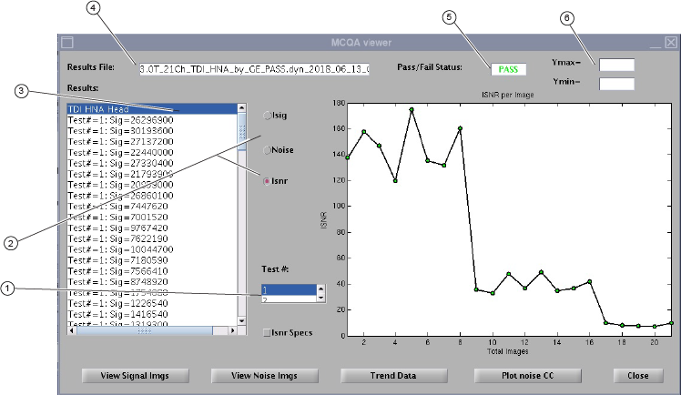
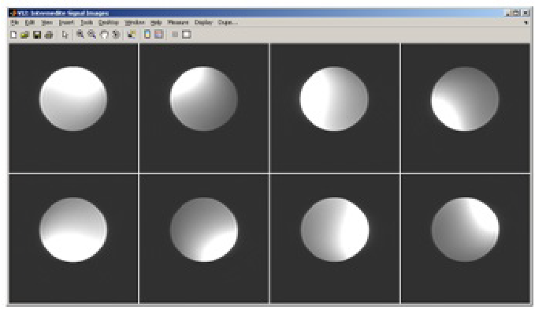
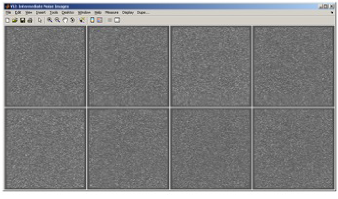
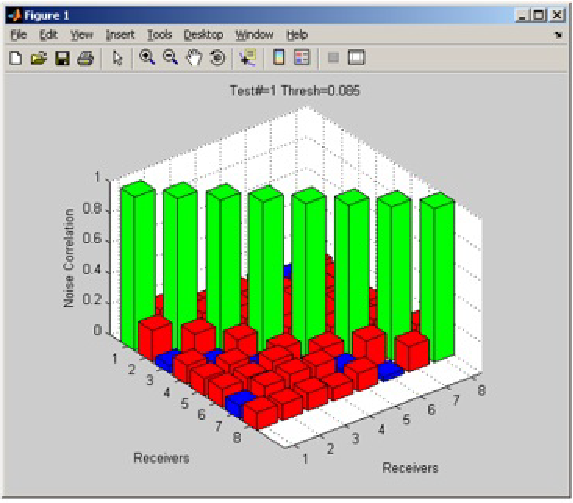
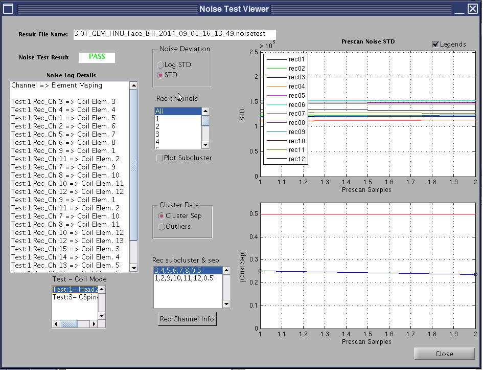
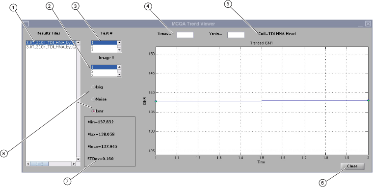

Review test results in the Multi-Coil Quality Assurance (MCQA) viewer, Noise Test Viewer, and MCQA Trend Viewer.
Multi-Coil Quality Assurance (MCQA) viewer
After the MCQA test is completed, click View Report Details to review the results.
Note The images contained in this document are a representation. Actual system images may vary.
The Results File and Pass/Fail Status details show at the top of the viewer.
The test results show in the Results window on the left side of the viewer.
To review past results, select File > Open Results File and select a coil results file.
Figure 1. MCQA viewer showing %SNR variance

1
Select test number
2
Plot Isig, Noise, or Isnr data per test number
3
Test data window
4
Name of the results file
5
Overall Pass/Fail status
6
Adjust Ymax and Ymin of plot independently
Use the MCQA viewer options to retrieve the exact report you want to see:
The Results window on the left of the viewer shows the test data including the percent variance in SNR (shown as %SNRvar). Any negative variance requires further evaluation per the recommended actions in Interpretation of test results for case number 2.
To review the results of the same coil, but for a different test, select the appropriate number from the Test # scroll box near the bottom of the screen.
To graph the data, select one of three choices: Isig, Noise, or Isnr. The corresponding results show in the window to the right. The integrated signal, noise, or integrated SNR values are listed on the vertical axis with the images along the horizontal axis.
To graph the Isnr specification values in addition to the data, select the Isnr Specs box below Test # near the bottom of the viewer.
The graph results automatically scale according to the data values. To manually change the vertical scale, enter the value into the Ymax and/or Ymin fields at the top right of the viewer.
To view all the signal or noise images, select View Signal Imgs or View Noise Imgs, and an image viewer shows with one image per coil element, ordered left-to-right and top-to-bottom as shown in the example below.Figure 2. Example of signal image

Figure 3. Example of noise image

From the MCQA viewer, select Plot noise CC to show a 3D plot of the noise cross-correlation data for the results being viewed. The data shows the relative cross correlation of noise between receiver channels.
Green data shows a one-to-one correlation.
Red data shows correlations above the threshold.
Note There are currently no specs for the noise cross-correlation data. It may be possible to determine patterns per coils and set specs as more data is collected.
Figure 4. Example 3D plot of signal and noise images

Noise Test Viewer
Use the Noise Test Viewer to look at the plots of the noise test results. It also shows the coil receiver to element mapping for each of the coil modes. The Noise Test Result field may show
Act Req instead of PASS. Act Req does not indicate a failure but instead that further evaluation is required. Depending on the content of the Result window from the MCQA tool menu, the FE will reference the appropriate recommended action comments in Interpretation of test results for case number 2 or 5.Figure 5. Noise Test Viewer

Click Close to exit the MCQA Trend Viewer and MCQA Results Viewer.
Click Quit to exit the MCQA tool.
Close any image files still open on the page.
Remove all coils and phantoms from the system.
MCQA Trend Viewer
When an MCQA test is completed, a new results file is generated. Past MCQA results are stored on the system, which allows for trending of ISNR data over time. These results can be graphically trended using the MCQA trend viewer. All the files available for trending are listed in the Results Files
window at the left.
In the MCQA Viewer, click Trend Data.
Select the Test # and Image # for the data you want to review.
Choose Isig, Noise, or Isnr to show the type of graph you want to view.
Figure 6. MCQA Trend Viewer

1
Files used in trending
2
Select image number for currently selected test
3
Select test number
4
Adjust Ymax and Ymin of plot independently
5
Logical coil name for currently selected test
6
Close MCQA trend viewer
7
Current statistics
8
Plot Isig, Noise, or Isnr data per test number
The data shows over time (number of tests run). To change the vertical scale, enter new values into the Ymax and/or Ymin fields at the top of the screen. Statistics about the existing data show in the lower left part of the viewer.